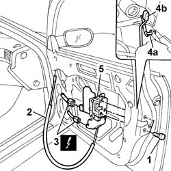
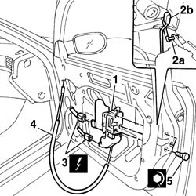

7005N20 Central locking MOTOR/LOCK ASSEMBLY for one front door, left or right - R.R. with door panel and support frame removed
- Path
- Procedures > 70 FITTINGS > 7005 passenger compartment front side doors > 7005N FRONT DOOR CENTRAL LOCKING SYSTEM > 7005N20 Central locking MOTOR/LOCK ASSEMBLY for one front door, left or right - R.R. with door panel and support frame removed
- Kind
- repair procedure (removal / refitting; the operation number is the code)
- Applies to
- all engines; all production periods
- Interactive page
- https://sloeber94.github.io/elrnDB-lThss/en/#/79947
Applies to: all engines; all production periods
 Removing
Removing
 Refitting
Refitting- [7005E04]
1. Undo the fixing bolts.
2. Release the inner handle door opening control cable from the retaining springs.
3. Disconnect the electrical connections.
 | Description | Connector |
|---|---|---|
3 | Right front door lock geared motor | N051A |
| Description | Connector |
|---|---|---|
3 | Right front door lock geared motor | N051B |
4. Disconnect the door opening idler (4a) from the handle, geared motor side and the door opening/closing idler (4b) from the lock barrel, key lock barrel side.
5. Remove the front door lock geared motor.

Applies to: all engines; all production periods
Refitting
Removing1. Fit the front door lock geared motor in the housing.
2. Connect the door opening idler (2a) from the handle, geared motor side and the door opening/closing idler (2b) from the lock barrel, key lock barrel side.
3. Connect the electrical connections.
| Description | Connector |
|---|---|---|
3 | Right front door lock geared motor | N051A |
| Description | Connector |
|---|---|---|
3 | Right front door lock geared motor | N051B |
4. Secure the inner handle door opening control cable to the retaining springs.
5. Tighten the bolts fixing the front door lock geared motor to torque.
 | Value - daNm | Fastening | Component | Ø |
|---|---|---|---|---|
5 | 1.4 | Bolt | FRONT DOOR LOCK MOTOR | M8 |

Applies to: all engines; all production periods
- Connect the negative battery terminal.
- Check the operation of the switch unit.
- [7005E04]